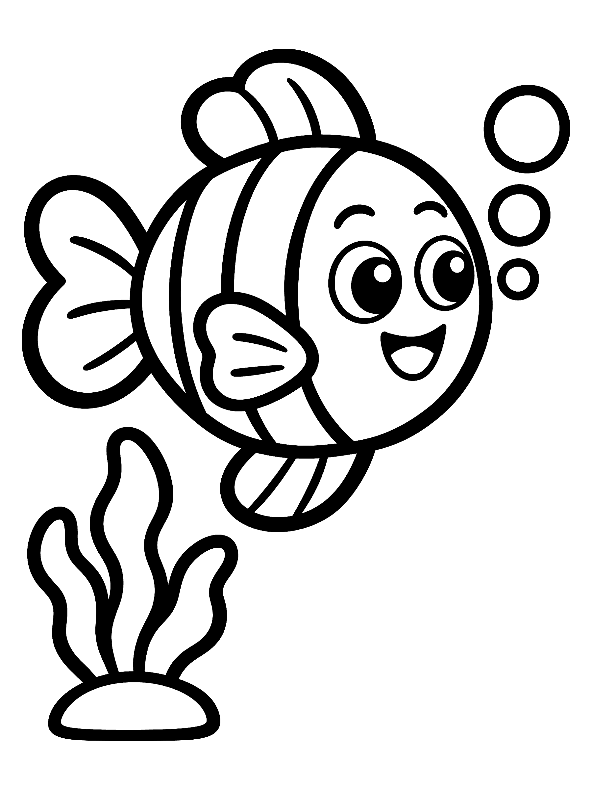
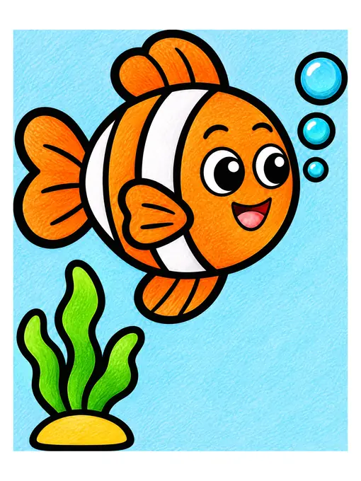

Clownfish Pal Coloring Page
Little Kids Free printable · Letter and A4
A round striped cartoon fish with big eyes swimming past one sea plant.

Color ideas
Here is one way to color it. Good colors to pull out: orange, tan, brown, gold, lime, teal.
Want this small colored picture printed in the corner of the page as a guide? Open the print options and switch on Color guide.
About this page
Bold, simple shapes with thick lines and big spaces. Made for toddlers and preschoolers, about ages 2 to 5.
It prints on one sheet of regular paper. For markers, use heavier paper or put a spare sheet underneath. In the print options you can also print two per sheet, switch to light gray lines, or add a name line.